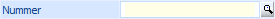
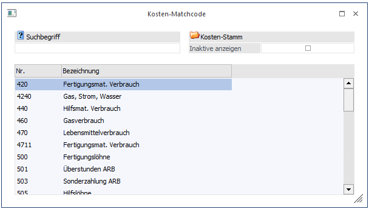
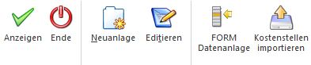

Der Matchcode erlaubt Ihnen die Suche nach allen verfügbaren Informationen, die in diesen Feldern eingetragen werden können. Dazu zählen die Kostenträger, Kostenarten und Kostenstellen. Die Matchcodesuche steht auch für den Einheiten- und Gruppenmatchcode zur Verfügung.

Es gibt drei verschiedene Möglichkeiten, den Matchcode aufzurufen:
ü Machen Sie einen Doppelklick in das Feld
ü Drücken Sie die F9-Taste
ü Klicken Sie die Lupe an
Nach Aufruf des Matchcodes erscheint ein neues Fenster. Hier können Sie nun den Suchbegriff eingeben, wobei Sie in diesem Fall entweder nach der Nummer oder Bezeichnung suchen können. Danach drücken Sie die RETURN-Taste und der Suchlauf wird gestartet. Alle Datensätze, die dem Suchbegriff entsprechen, werden in der Listbox angezeigt. Aus dieser Listbox können Sie den gesuchten Datensatz übernehmen, indem Sie sich mit der Pfeil-nach-Unten-Taste auf den Eintrag stellen und diesen mit der RETURN-Taste bestätigen.

Aktivieren Sie die Checkbox "Inaktive anzeigen", werden auch Einträge mitangezeigt, die bereits auf Inaktiv gesetzt sind. Die Tabelle wird um die Spalte inaktive erweitert. Bei inaktiven Datensätzen wird die Checkbox dargestellt.
Achtung
Wird der Kosten-Matchcode zur Suche einer Kostenart im Fenster "Kostenträger - Budget" aufgerufen, so werden je nach Kostenstelle entweder nur Einzelkostenarten oder nur Erlöskostenarten im Matchcode angezeigt.
Hinweis
Im Kostenstellenmatchcode wird zusätzlich die Bezeichnung 2 angezeigt und es kann danach gesucht werden.
Buttons

Ø Anzeigen
Startet den Suchlauf.
Ø Ende
Schließen des Fensters.
Ø Neuanlage
Durch Anklicken des Neu-Buttons (oder der Tastenkombination Alt + N) kann das Stammdatenfenster zur Neuanlage von Kostenstellen/Kostenarten/Kostenträgern aktiviert werden.
Ø Editieren
Mit dem Editieren-Button (oder der Tastenkombination Alt + T) können Sie in das jeweilige Stammdatenfenster gelangen um bereits vorhandene Kostenstellen/Kostenarten/Kostenträger zu editieren.
Die Funktionen Neuanlage und Editieren stehen nur in der WinLine KORE zur Verfügung.
Ø FORM Datenanlage
Die "FORM Datenanlage" bietet die Möglichkeit Datensätze in der WinLine vorzuhalten und bei Bedarf in die WinLine Stammdaten zu übernehmen (nähere Informationen entnehmen Sie bitte dem Kapitel "FORM Datenanlage".
Ø Stammdaten importieren
Mit Hilfe dieses Buttons können Stammdaten schnell und effizient aus externen Quellen übernommen werden. Um was für Stammdaten es sich hierbei handelt (Kostenstelle, Kostenträge oder Kostenart) ist abhängig vom Ausgangsfeld der Suche (weitere Informationen entnehmen Sie bitte dem Kapitel "Stammdaten importieren").
Ø Tabelleneinstellungen speichern
Die Spalten einer Tabelle können grundsätzlich an beliebige Positionen verschoben, bzw. in der Breite entsprechend angepasst werden. Durch Anwahl des Buttons "Tabelleneinstellungen speichern" werden die Einstellungen benutzerspezifisch gespeichert und bei dem nächsten Aufruf des Programmpunktes wieder vorgeschlagen.
Ø Gesamteinstellungen speichern
Im Gegensatz zu "Tabelleneinstellungen speichern" können mit "Gesamteinstellungen speichern" mehrere Tabellenaufbauten gespeichert und nach Wunsch geladen werden. Zusätzlich werden Sonderfunktionen der Tabelle (z.B. "Spalte gruppieren") ebenfalls bei der Speicherung bedacht.